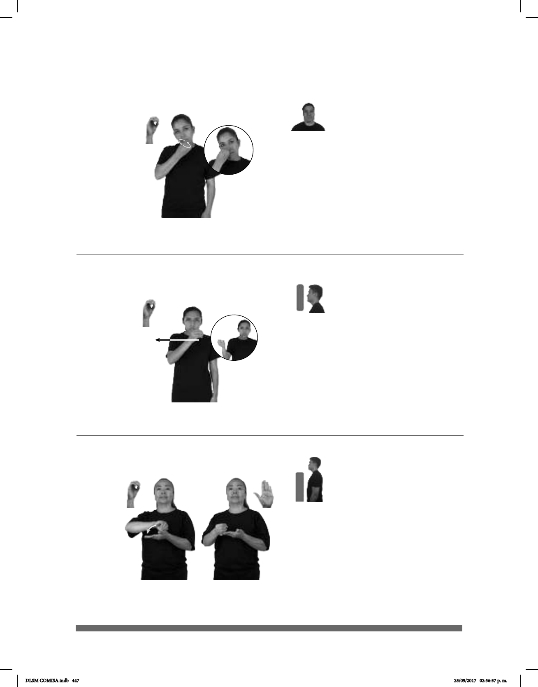

447
Seña: SM
O.1
Palma hacia adentro.
A la altura del pecho.
Movimiento: Recto, de izquierda a
derecha.
1. sust. m. Manera en que se
ponen o se arreglan varios elementos de
acuerdo con el lugar que les corresponde o
con un criterio determinado, y criterio o
regla con el que se disponen. 2. sust. f.
Estructura gramatical formada por la unión
de un sujeto y un predicado. 3. v. tr.
funcione ordenada y efectivamente.
(O-59)
Orden (A)
pos-MI MAMÁ GUSTAR ORDEN pro-SU
de ella
CASA
A mi mamá le gusta el orden en casa.
Seña: SB
MD O.1, MB
B-P.2
MD palma inicia
hacia la derecha y termina hacia la
izquierda. MB palma hacia arriba.
MD sobre MB. MB a la
altura del pecho.
Movimiento: El antebrazo de MD
gira y cambia la orientación de la
mano.
Ciudad del estado de
Veracruz, perteneciente a los
Estados Unidos Mexicanos.
(O-60) Orizaba, Veracruz
pos-MI PRIMO ORIZABA
allá
VIVIR
Mi primo vive en Orizaba.
Seña: SM
O.1
Palma hacia adentro.
Frente a la boca.
Movimiento: La mano se mueve de
muñeca.
1. sust. f. Invocación
religiosa para dirigirse a un ser divino
especialmente a Dios o a los santos
para rendir culto o para pedir o agrade-
cer algo. 2. v. intr. Dirigir oraciones a
Dios, a otra divinidad o a algún santo;
rezar.
(O-58)
/ Orar
pro-NOSOTROS MUNDO PAZ DEBER ORAR
Debemos orar por la paz mundial.
DLSM COMISA.indb 447 25/09/2017 02:56:57 p. m.